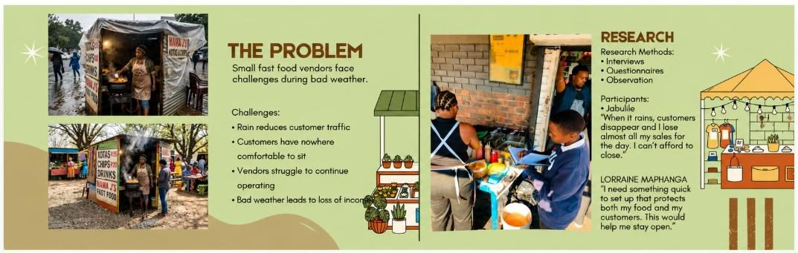
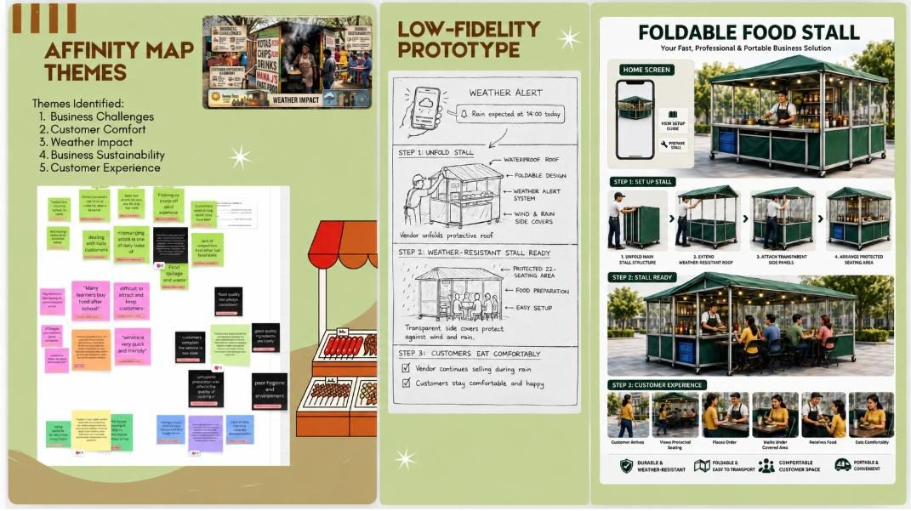
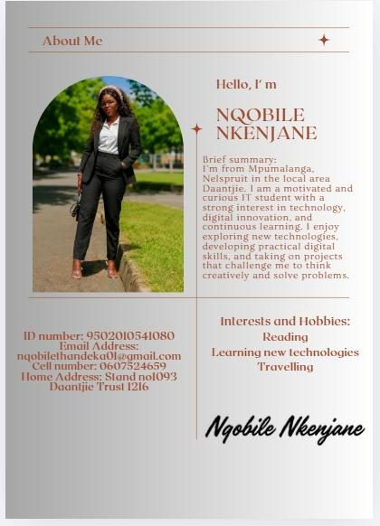
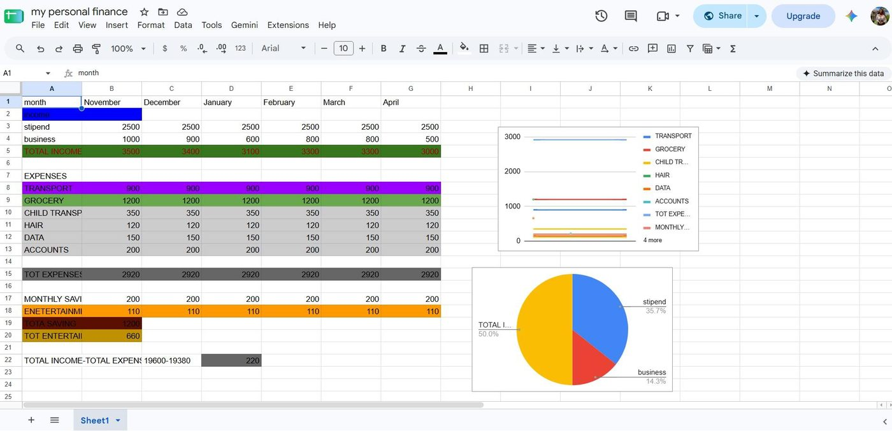
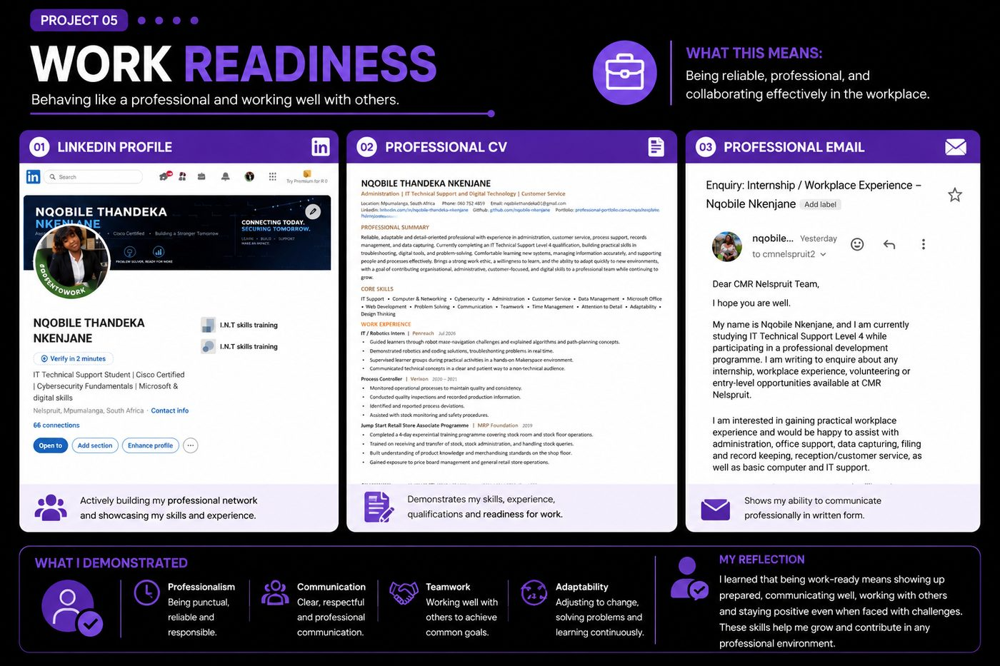
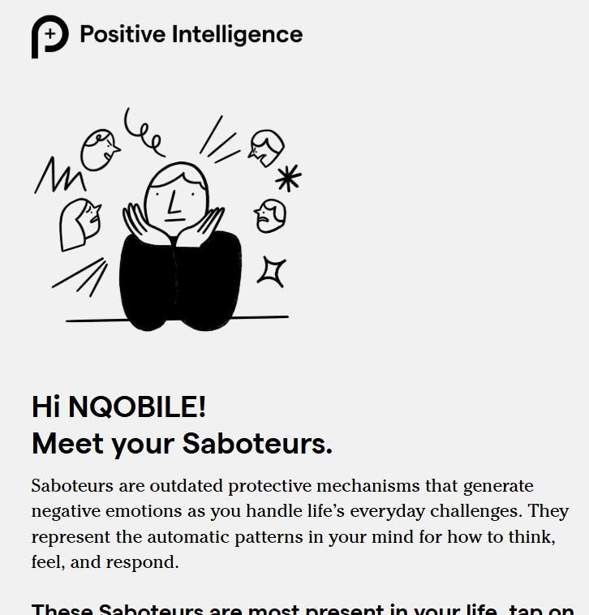
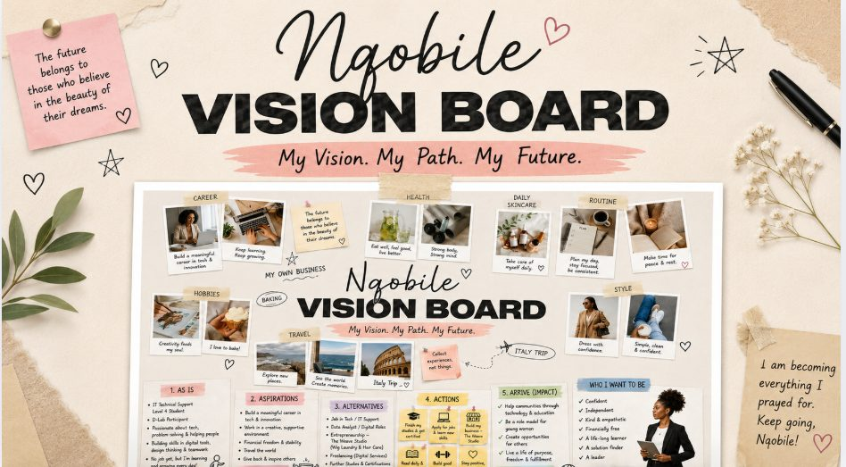

This portfolio showcases my growth, skills and experiences throughout my d-lab journey. It includes evidence of my learning, projects, reflections and the impact I am creating.
What this means: Solving problems in creative, human-centred ways. Design Thinking is a problem-solving process that helps us understand people's needs, identify problems, create ideas, build solutions, and test them.
In our group, we were solving the problem of how township entrepreneurs can protect their stock and profits from load shedding and crime. We followed the process Empathise → Define → Ideate → Prototype → Test — researching the problem, generating ideas, building a prototype, and improving it with feedback. Our solution was a foldable food stall/container concept designed to help entrepreneurs safely protect their stock and continue operating.


This project shows my ability to research and empathise with real users, identify the core problem behind their challenges, and design a practical, creative solution — then test and refine it based on real feedback.
What problem was I trying to solve?
I wanted to help township entrepreneurs protect their stock and operate their businesses more safely and practically.
How did I make sure the solution was human-centred?
I focused on the users' needs, researched their challenges and used their feedback to guide my solution.
What did I learn from testing and feedback?
I learned that feedback is important because it helps identify problems I may not see myself. I learned to be flexible, consider affordability and improve my ideas based on users' needs.
Explore the solution I developed during my Design Thinking sprint and see how I applied the Design Thinking process to create a practical solution.
SEE LIVE DEMO →What this means: Using technology to work smartly and creatively — using digital tools confidently to work, create, communicate, and solve problems.


These examples show that I can use a range of digital tools — Canva, Google Sheets and Google Docs — confidently and for different purposes, from visual design to organising data and making informed decisions.
What new digital tool did I learn?
I learned to use Canva to create professional infographics and visual content.
How did I use technology to make my work better?
I used Canva to make my information more visual, Google Sheets to organise my finances, and Google Docs to create and manage documents.
When did I feel confident / less confident with digital tools?
I felt confident when using Google Docs and Canva after practising. I was less confident when I first started using some of the tools, but I improved by practising and learning from my mistakes.
What this means: Behaving like a professional and working well with others — communication, teamwork, reliability and adaptability.

Building a professional LinkedIn profile, a clear CV, and writing a well-structured professional email all show that I can present myself professionally and communicate clearly in a workplace context.
What does being professional mean to me?
Being professional means being reliable, respectful, responsible and having a positive attitude while taking ownership of my work.
How did I show good teamwork?
I showed teamwork by listening to others, sharing my ideas, respecting different opinions and working together to achieve our group goals.
When was it hard to adapt, and how did I manage?
I learned to stay calm, ask for help when needed and find new ways to solve problems when challenges occurred.
What this means: Building personal strength and confidence to succeed — understanding yourself, taking initiative, making good decisions and handling challenges effectively.
Dear Future SELF,
As I write this, I am at a moment in my life where I am learning, growing, and trying to understand both myself and the world around me.
This moment has taught me a lot about who I am. I have learned that I am stronger than I sometimes think, especially when facing challenges. I am also learning that growth takes time, patience, and effort. I have realized that it is okay to make mistakes, because they help me learn and become better.
I have also learned important lessons about other people. Not everyone will understand me, and that is okay. People are different, with their own struggles and perspectives. I have learned to be more understanding, patient, and kind, because everyone is going through something I may not see.
One important lesson I want you to remember is to never give up on yourself. Even when things are difficult, keep pushing forward. Stay focused on your goals, believe in your abilities, and never let fear stop you from trying. Always choose growth over comfort.
In my community right now, there are challenges such as inequality, lack of opportunities, and struggles faced by young people. Many young girls and boys do not always have the support or resources they need to succeed. In the future, I hope to see positive change — better education, more opportunities, and a community where young people feel safe, supported, and empowered to follow their dreams.
Over the next five years, I want to grow into a stronger, wiser, and more confident person. I want to become someone who is disciplined, hardworking, and kind. I hope to be a person who helps others, stands up for what is right, and makes a positive difference in the lives of people around me.
I want you, my future self, to be proud of how far you have come. Remember where you started, the lessons you learned, and the dreams you had. Never lose your kindness, your determination, and your belief in a better future.
Take care of yourself, and never forget who you are.
Sincerely, Nqobile


My Vision Board, Saboteur reflection, and Letter to My Future Self all show self-awareness, initiative, and critical thinking about my own growth and future goals.
What did I learn about myself?
I learned more about my strengths, weaknesses, goals and the behaviours that can sometimes hold me back.
How have I grown during the programme?
I have grown in confidence, self-awareness and my ability to set goals and work towards my future.
When did I take initiative and show confidence?
I took initiative by setting goals through my Vision Board, reflecting on my future and taking responsibility for my personal development.
How did I use critical thinking in a project or challenge?
I used critical thinking by reflecting on my Saboteur Quiz results, identifying behaviours that could limit me and thinking about how I can respond to challenges in a more positive way.
Here I reflect on my whole experience in the d-Lab programme.
I am proud of my ability to use digital tools such as Google Docs, Sheets, Slides, Canva, CapCut, GitHub, and HTML/CSS to create and complete projects.
I learned how to understand a problem, think of different solutions, test my ideas and improve them when something did not work.
I improved my ability to communicate my ideas clearly, listen to others, work with a team and contribute towards achieving a common goal.
What challenges did I face and how did I overcome them?
I faced challenges when learning new digital tools, solving technical problems and becoming more confident. I overcame them through practice, asking for help, learning from feedback and staying positive.
How do I plan to continue learning after graduation?
After graduation, I plan to continue learning through online courses, certifications, practical projects and gaining workplace experience.
What career or study goals do I have next?
My goal is to gain practical work experience, secure an entry-level opportunity and continue developing my IT, digital, administrative and professional skills.